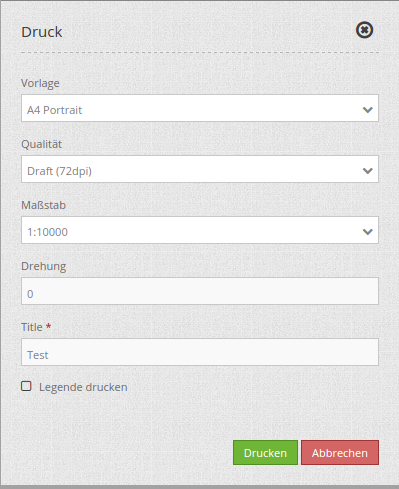
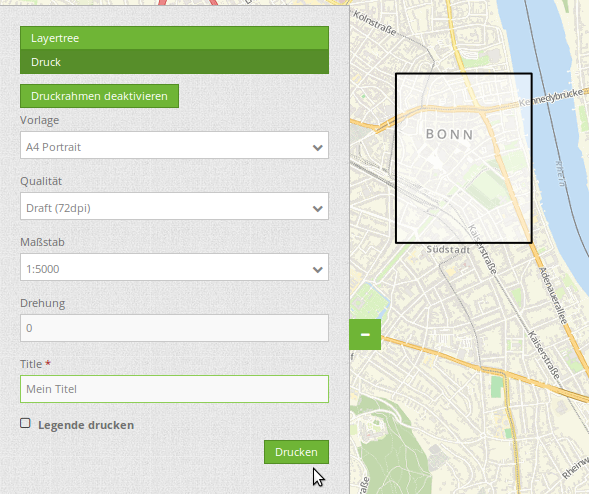
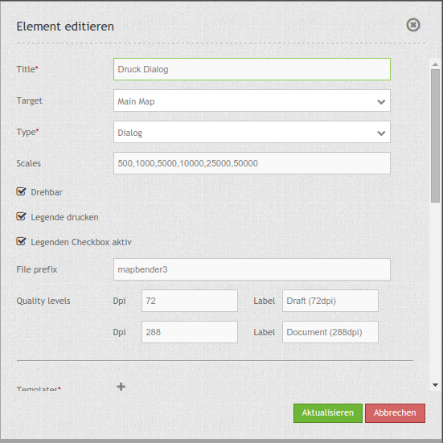

PrintClient (Druck)¶
Mapbender3 bietet einen PDF Druck, der einen definierten Bereich der Karte ausdruckt. Hierbei stehen dem Client verschiedene Auswahlmöglichkeiten zur Verfügung:
- Auswahl Maßstab,
- Auswahl Qualität,
- Drehung des Ausschnitts,
- Ausdruck Legende.
- Optional können freie Textfelder definiert werden (z.B. Titel, Kommentar, Bemerkung), die mit in den Druck übergeben werden.
Der Druck greift auf Druckvorlagen zu, die individuell angepasst werden können. In den Druckvorlagen können Bereiche für Datum, Maßstab (Text und Maßstabsbalken), Übersichtskarte und Nordpfeil definiert werden.
Mapbender3 bringt bereits eine Kollektion von Druckvorlagen (LibreOffice Draw Dateien in den Formaten A4 bis A0) mit, die individuell angepasst werden können.
{kind=link}
Der PrintClient kann sowohl als Dialog als auch als Element in der Sidebar verwendet werden. Wenn er sich in der Sidebar befindet, müssen Sie zuerst den Druckrahmen aktivieren, um den Druck starten zu können. Wenn Sie fertig sind, müssen Sie den Druckrahmen wieder deaktivieren, damit die Karte wieder wie gehabt genutzt werden kann (im Dialog geschieht dies alles durch das Öffnen und Schließen des Dialogfensters).
{kind=link}
Konfiguration¶
{kind=link}
Das Element kann über einen Button aufgerufen werden oder in der Sidepane (Seitenleiste) verwendet werden. Siehe unter Button für die Konfiguration.
- Titel: Titel des Elements. Dieser wird in der Layouts Liste angezeigt und ermöglicht, mehrere Button-Elemente voneinander zu unterscheiden. Der Titel wird außerdem neben dem Button angezeigt, wenn “Beschriftung anzeigen” aktiviert ist.
- Target: Zielelement (ID des Kartenelements).
- Type: element oder dialog, default ist dialog
- Maßstabsstufen (Scales): Maßstäbe, die in der Selectbox ausgewählt werden können. Wenn keine Maßstäbe angegeben werden, kann ein beliebiger Maßstab in einem Textfeld definiert werden.
- Drehbar: definiert, ob der Ausdruck gedreht werden kann, der Standardwert ist true
- Legende drucken: ob auch die Legende der Karte gedruckt werden soll, der Standardwert ist false
- Legenden Checkbox aktiv: Soll die Legenden-Checkbox beim Start aktiv sein
- File prefix: Definition des Dateinames für das PDF
- Qualitätsstufen: Qualität in dpi-Werten definieren und die dazugehörige Beschriftung angegeben
- Template: Verweis auf die Druckvorlage (z.B. a4potrait).
- Beschriftung (Label): Beschriftung des Feldes (z.B. Potrait A4).
- Optionale Felder (optional field):
- title: Name des optionalen Feldes, der Standardwert ist null (keine optionalen Felder sind definiert).
- label: Beschriftung des optionalen Feldes.
- options: { required: true } : Typ des optionalen Feldes, muss true oder false sein.
- Replace pattern: Kartenaufruf kann verändert werden. Angaben können angefügt oder verändert werden, wie beispielsweise map_resolution (für MapServer).
YAML-Definition:¶
target: map # ID des Kartenelements
type: dialog # element oder dialog, default ist dialog
templates:
- { template: a4portrait, label: A4 Portrait} # Vorlagen (template): Vorlagename, Vorlagedateiname ohne Dateierweiterung (Mapbender sucht die Datei a4portrait.odg und a4portrait.pdf), die Vorlagedateien befinden sich in app/Resources/MapbenderPrintBundle
- { template: a4landscape, label: A4 Landscape} # Vorlagebeschriftung im Druckdialog
scales: [5000, 10000, 25000] # Maßstäbe definieren, die in der Selectbox ausgewählt werden können. Wenn keine Maßstäbe angegeben werden, kann ein beliebiger Maßstab in einem Textfeld definiert werden.
quality_levels: # die Qualität in dpi definieren und die dazugehörige Beschriftung angegeben
- { dpi: 72 , label: Draft (72dpi)} # die erste Angabe ist der dpi Wert, die zweite Angabe ist die Beschriftung
- { dpi: 288, label: Document (288dpi)} # es können weitere dpi-Werte angegeben werden
rotatable: true # true/false ob der Ausdruck gedreht werden kann, der Standardwert ist true
legend: true # true/false, der Standardwert ist false
legend_default_behaviour: false # true/false, Legenden Checkbox standardmäßig ausgewählt
file_prefix: mapbender3 # Definition des Dateinames für das PDF (wird zusammengesetzt zu file_prefix_date.pdf)
optional_fields: # es können optional weitere Felder definiert werden (z.B. Titel-Feld)
title: # Name des optionalen Feldes, der Standardwert ist null (keine optionalen Felder sind definiert)
label: Titel # Beschriftung des optionalen Feldes
type: text # Typ des optionalen Feldes
options:
required: true # erforderlich: true or false
comment1:
label: Kommentar 1
options: { required: false }
comment2:
label: Kommentar 2
options: { required: false }
bearbeiter:
label: Bearbeiter
options: { required: true }
replace_pattern: # Für den Druck kann der Kartenaufruf verändert werden.
- # Es können zusätzliche Parameter hinzugefügt werden (wie map_resolution für MapServer)
default: { 288: '&map_resolution=288' }
-
pattern: 'stadtplan.xml' # oder es können für den Druck optimierte Dienste angefordert werden.
replacement: { 288: 'stadtplan_4.xml' }
Class, Widget & Style¶
- Class: Mapbender\CoreBundle\Element\PrintClient
- Widget: mapbender.element.printClient.js
File location¶
northarrow Das Bild des Nordpfeils (“North arrow”) befindet sich unter app/Resources/MapbenderPrintBundle/images/. Sie können das Bild des Nordpfeils auch durch ein anderes Bild ersetzen.
print templates Die Vorlagen befinden sich unter app/Resources/MapbenderPrintBundle/templates/. Sie können eigene Druckvorlagen erstellen.
Erstellen eines individuellen Vorlage¶
Um eine individuelle Druckvorlage zu erstellen, kopieren Sie eine vorhandene Druckvorlage (ODG-Datei) und bearbeiten diese. Sie können auch eine neue Libre Office Draw-Datei erzeugen. Die Vorlage kann feste Objekte wie ein Logo, ein Copyright oder Druckinformationen beinhalten. Zusätzlich muss eine Ebene für die dynamischen Elemente wie die Karte, die Übersichtskarte, der Nordpfeil, der Maßstab, das Datum und optionale Felder erstellt werden. Die dynamische Ebene ist eine zusätzliche nicht druckbare Ebene in der Libre Office Draw-Datei. Fügen Sie die Ebene in Libre Office Draw folgendermaßen hinzu: Menü: Einfügen -> Ebene... -> definieren Sie einen Namen für die Ebene und wählen Sie die Option nicht druckbar.

Definieren Sie Bereiche für die Karte, den Nordpfeil, den Maßstab, das Datum und mehr sowie für optionale Felder.
Die folgenden Bereiche liegen standardmäßig vor:
- map (Karte)
- overview (Übersichtskarte)
- scale (Maßstabsangabe in der Form 1:1000)
- scalebar (Maßstabsleiste)
- date (Datum in der Form 10.10.2014)
- northarrow (Nordpfeil)
- extent_ur_y, extent_ur_x, extent_ll_x, extent_ll_y (Koordinaten des Druckbereichs)
- dynamic_image (dynamisches Bild - gekoppelt an die Gruppe)
- dynamic_text (dynamischer Text - gekoppelt an die Gruppe)
Sie könne optionale Felder über die Element-Konfiguration definieren (wie Titel, Kommentar, Bearbeiter). Diese müssen Sie dann auch in die Open Office Draw Datei einfügen. Die dynamisch erstellten Text müssen in der ODG-Datei auf dem nicht druckbaren Bereich abgelegt werden, so dass Sie nicht im Vorlage-PDF ausgegeben werden.
Bei der Erstellung dynamischer Texte müssen die jeweiligen Objekte den passenden Namen haben, z.B. das Kommentarfeld comment1 muss auch in der Vorlage comment1 heißen. Zum Bennenen der Objektfelder reicht es nicht den Textinhalt anzupassen. Die Felder müssen selektiert und über Menü Ändern –> Name... angepasst werden.

Exportieren Sie die Vorlage als PDF unter dem gleichen Namen wie die ODG-Datei. Verwenden Sie den Namen ohne Dateierweiterung in der Druck yml-Definition.
Das Druck-Skript liest die Informationen (Position, Größe, Schriftgröße, Ausrichtung) aus der ODG-Datei aus und verwendet ebenfalls das PDF-Dokument mit den festen Objekten. Aus beiden und den aktuellen Karten wird dann eine PDF-Druckdatei erstellt.
Gruppenabhängig können in der Druckausgabe unterschiedliche Bilder (z.B. Logo der Gemeinde) ausgegeben werden. Hierzu gibt es die Platzhalter dynamisches Bild und dynamischer Text. Sofern diese Bereiche im Drucklayout vorliegen wird nach einem Bild mit dem Namen der Gruppe gesucht und dieses im Bereich dynamic_image ausgegeben. Hierbei wird die Höhe zur Orientierung verwendet und die Breite entsprechend angepasst. Unter dynamic_text wird die Beschreibung der Gruppe ausgegeben.
Druck von Elementen vor dem Kartenbild
Damit beim Druck der Kartenbereich möglichst groß ist und wenig Platz durch weiße oder leere Bereiche verloren geht können Elemente vor das Kartenbild gelegt werden. Besonders hilfreich ist dies vorallem bei großen Druckformaten, wie DIN A1, die einen verhältnissmäßig breiten weißen Rand aufweisen.
Für die Nutzung dieser Funktion müssen die Templates angepasst und transparente PDF-Vorlagen erzeugt werden.
Templates anpassen:
- Elemente neu anordnen, am besten vor weißem Hintergrund
- Anordnung der Elemente im Vordergrund
- Rechtsklick Anordnen -> Ganz nach vorne
- Anordnung Karte = ganz nach hinten
- Rechtsklick Anordnen -> Ganz nach hinten
- Anordnung der Elemente im Vordergrund
- Alles selektieren
- STRG + A drücken
- Selektion als PDF drucken
- Exportieren als PDF
- Bereich Auswahl statt Alle
Konfiguration des Elements¶
Gehen Sie in der Administration von Mapbender3 zu Ihrer Anwendung und erzeugen Sie ein Element Druck (Beachten Sie: Das Element kann über einen Button aufgerufen werden oder in der Sidepane (Seitenleiste) verwendet werden).